This document describes how JJack
clients are created and used by means of the BeanBuilder
development tool from Sun Microsystems.
Refer to the JJack documentation for
general information about JJack and on alternative ways to deploy JJack
clients.
Copyright © Jens
Gulden.
Licensed under the GNU
Lesser General Public License (LGPL).
This software comes with NO WARRANTY. See file LICENSE for details.
The BeanBuilder
is a Java development tool by Sun
Microsystems. It can be downloaded
for free
at http://java.sun.com/products/javabeans/beanbuilder/index.jsp.
As with most Java programs, no installation is necessary - just unpack
the files into their own directory and run the startup script run.sh
to test the BeanBuilder. The application will appear looking
like this:
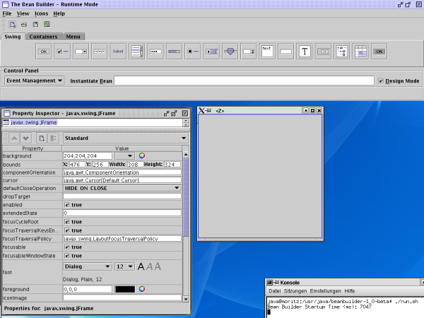
Load the set of example JJack-clients from file <JJack-home>/lib/jjack-clients.jar,
by choosing "File / Load archive..." from the menu:
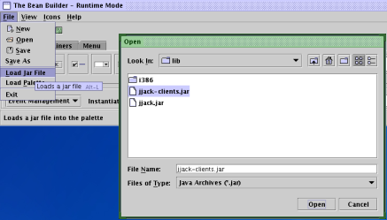
After the JJack clients have been loaded, a new sheet in the
BeanBuilder-toolbar appears:
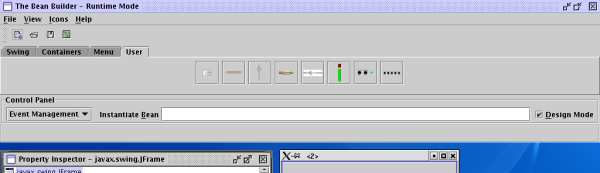
Now try to add a Socket client to the Bean
construction panel. Click the Socket-button in the toolbar (),
then
click somewhere into the empty Bean-panel to place an instance of Socket
there. The underlying native JJack system may crash at this point,
because
it gets initialized too late. See
next chapter on how the BeanBuilder is run with support for JJack
clients.
This section describes how the BeanBuilder is started with preconfigured JJack support, having the example JJack-clients available in the toolbar.
These points are to be taken care of:
The JJack API classes in archive lib/jjack.jar
must be present on the system classpath to be able to load JJack
clients inside the BeanBuilder (as seen above).
To prevent the application from crashing when the first JJack Bean is instantiated, it is necessary on some systems to register the native JACK client of the underlying JJack system as early as possible, before actually starting up the BeanBuilder. This can be achieved by using the JJackSystem wrapper, see Running the BeanBuilder with JJack support for details.
lib/jjack-client.jar
to the system classpath.JJack's distribution archive contains a startup script for the
BeanBuilder which takes care of these extensions. The script is bin/runBeanBuilder.sh.
Make sure all paths used in this script are set correctly (JJACK_HOME,
BB_HOME and JAVA_HOME), and that the JACK
daemon is running on your system. Then invoke runBeanBuilder.sh.
The application will start up with the JJack example clients available
on the toolbar:
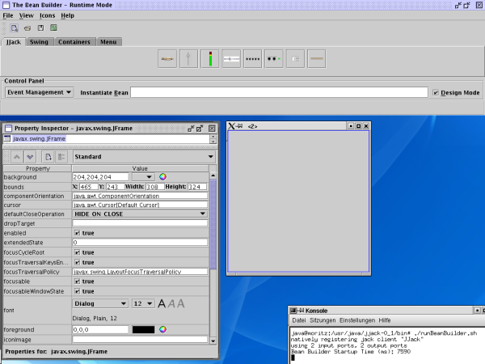
Again try to add a Socket client to the Bean
construction panel. The application should no longer crash.
To find out if the native JACK client of the JJack system has
successfully been registered, start a JACK connection manager
application. (One of such applications is qjackctl, an
alternative tool is the command-line-controlled jack_connect.)
If everything works
fine, a JACK client named "JJack" appears in the list of available
clients:
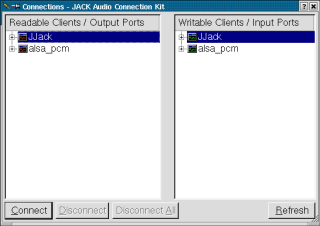
To test your JJack clients with audio data, connect JJack's input
ports to some audio source. The example below show the xmms
media player as input to JJack, and the system's 'physical' ALSA audio
output device fed by JJack's output:
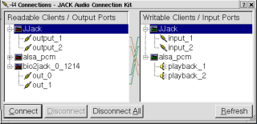
After the native JJack client is registered and the BeanBuilder has
started up, you can start constructing a JJack client inside the
BeanBuilder.
1. First pick the Socket Bean and place it on
the
blank Bean-panel:
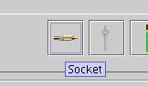
(A Socket client is always needed as the first element of a
Bean-built JJack client, because it provides access to the underlying
JJack system and lets the actual audio processor client connect to the
JJack system.)
2. Now choose a JJack client from the
toolbar palette by clicking its button, and place it onto the
Bean-panel. The example shows the Gain client put onto
the Bean-panel:
3. The last step is to connect the client to the Socket,
in order to make the audio data 'flow' through the Gain
client (which means making the process()-method be called
regularly, subsequently delivering audio events). This is done by
drawing a
property connection from the Gain client to the SocketGain
client, and selecting the "chained"-property
of the Socket to be set:
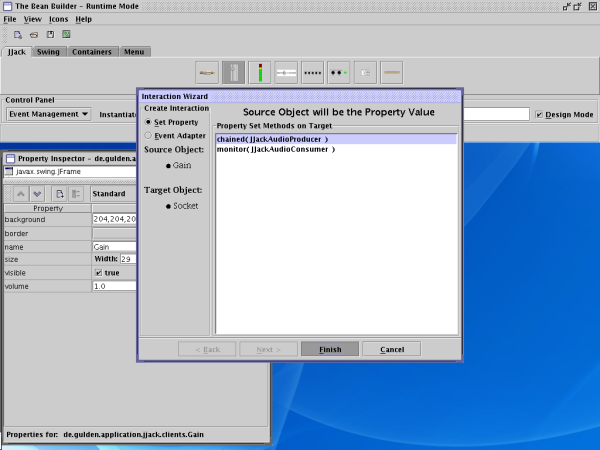
(Note: The BeanBuilder does not support connecting Beans to each
other as event listeners, and without generating proxy classes. So the
way
to connect clients to each other is to set them
as each other's properties, not event listeners.)
The result is a a green arrow shown in design mode, that indicates that the two beans are interconnected:
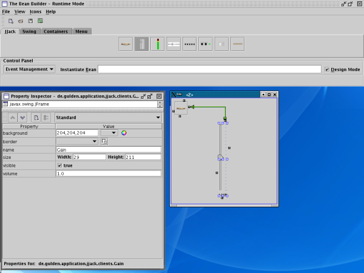Finally, switch from design mode to runtime mode by unchecking the
checkbox "Design Mode" on the right:
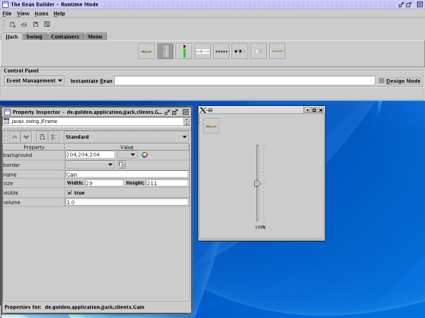
The JJack client Bean is now ready to use:
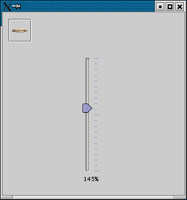
To let more than one client influence the audio signal stream,
connect another client to the previous one via the "chained"-property.
To let monitor-clients analyze the signal without changing it, connect
them via the "monitor"-property and its "addMonitor(..)"-method.
Gain client
and the Delay client. Behind each client, an Oscilloscope
monitor-client is conected to display the signals: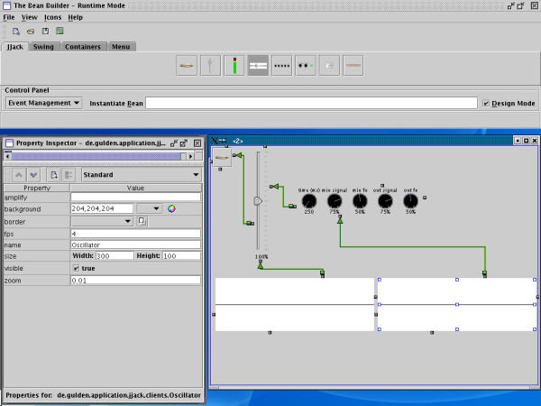
Switching to runtime mode makes this JJack client Bean ready to use:
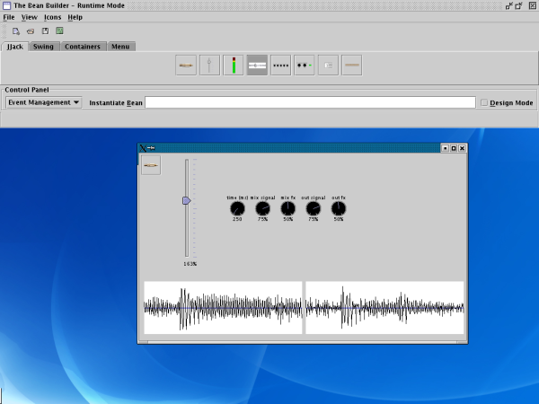
Copyright
© Jens Gulden and others 2004-2007
Licensed under the LGPL.